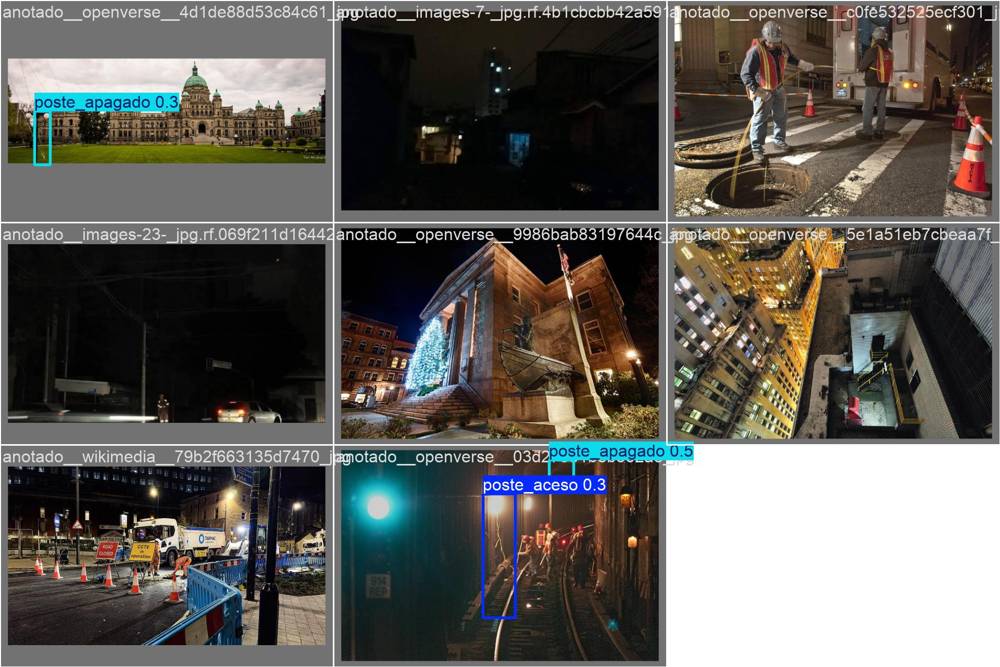
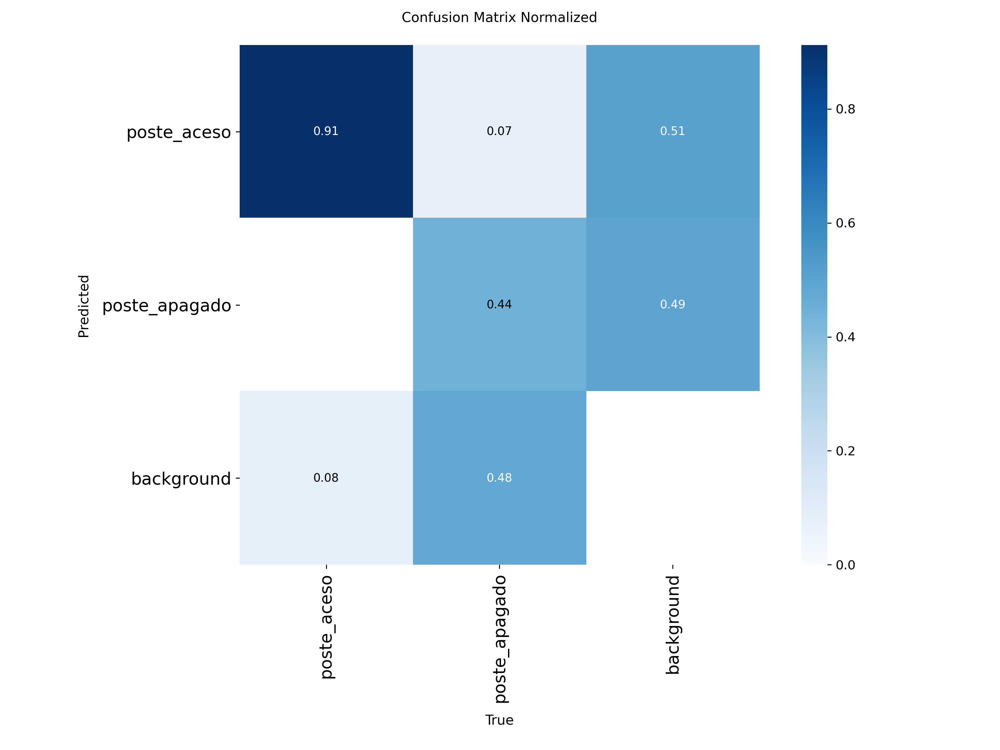
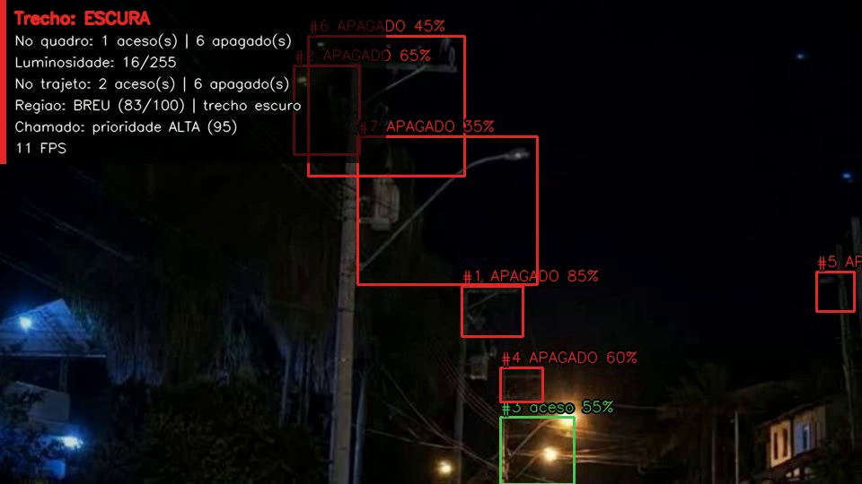
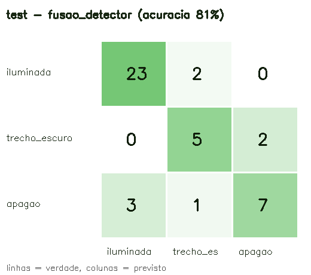
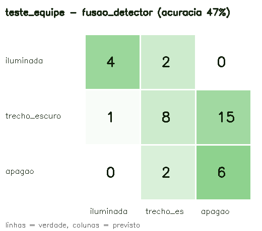
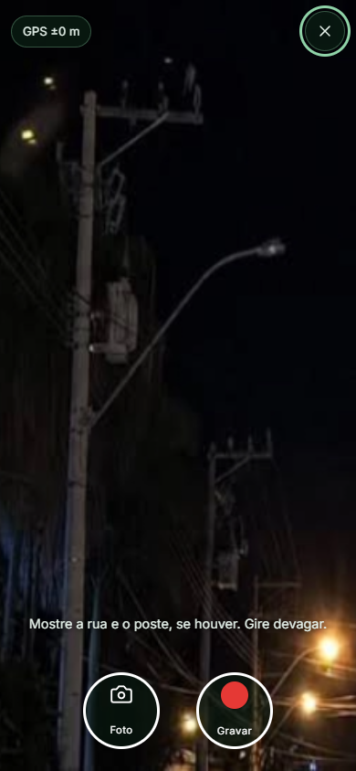
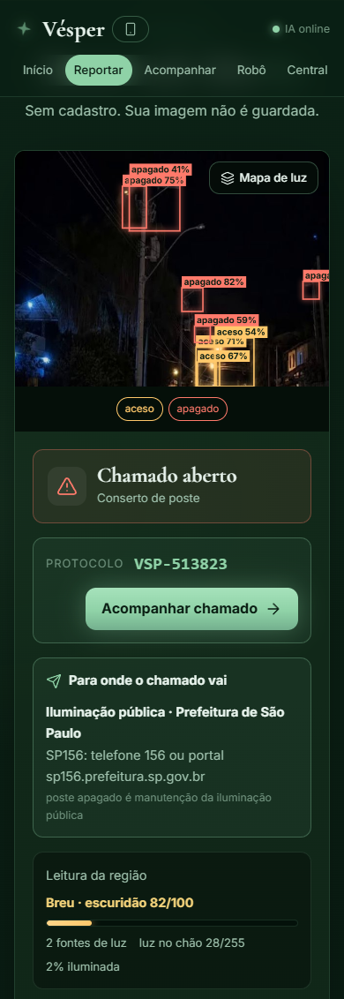
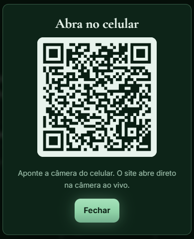
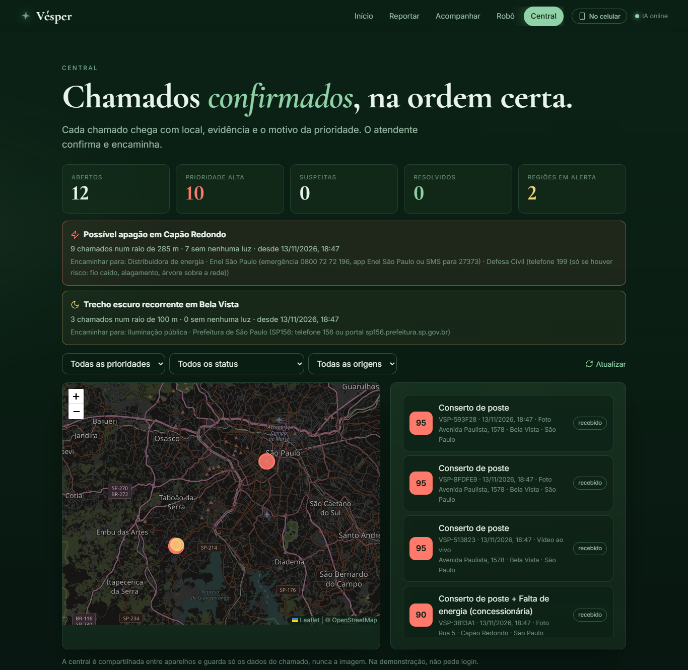

Visão computacional em tempo real para levar a rua escura e o apagão até quem pode resolvê-los
| Nome | RM | Papel no projeto |
|---|---|---|
| Guilherme Daher | 98611 | Visão Computacional · DevOps e Cloud |
| Gabriel Freitas | 550187 | Generative AI |
| Heitor Nobre | 551539 | Maker Lab |
| Vinicius Yamashita | 550908 | RPA |
| Lucca Alexandre | 99700 | Big Data · Negócio e Pitch |
Ruas com iluminação pública falha aumentam o medo, favorecem assaltos e causam quedas e acidentes à noite. Ainda assim, a falha demora a chegar a quem conserta: depende de alguém reclamar, saber para quem reclamar e descrever o local. Este trabalho apresenta a visão computacional do Vésper, plataforma que liga o cidadão no escuro à prefeitura e à distribuidora de energia. Treinamos de forma customizada um detector YOLO26s para encontrar luminárias acesas e apagadas, com 1.137 imagens de datasets públicos, imagens com licença aberta, fotos noturnas revisadas pela equipe e exemplos sintéticos de poste apagado. Como uma rua escura nem sempre mostra um poste, criamos também a leitura da cena inteira: medidas explicáveis de luz fundidas a um classificador YOLO26-cls que separa rua iluminada, trecho escuro e apagão, com vetos físicos (poste aceso significa rede com energia) e sinais de exposição da câmera. A solução roda em tempo real, com rastreamento ByteTrack e painel de realidade aumentada, e o cidadão filma ao vivo pelo navegador, sem instalar nada. Relatos próximos viram um alerta de região, e cada chamado vai ao órgão certo. Rostos são borrados e nenhuma imagem é guardada. No teste com fotos nunca vistas, o detector alcançou mAP50 de 0,49 (0,84 para postes acesos), com 4,6 ms por imagem em GPU, e a leitura de cena acertou 81% das cenas, contra 72% das regras isoladas. Os resultados mostram que a visão computacional transforma uma reclamação em evidência localizada, priorizada e encaminhada.
A iluminação pública é uma das infraestruturas que mais pesam na sensação de segurança de quem anda à noite. Uma rua escura afasta pedestres, favorece assaltos e esconde buracos e desníveis, o que causa quedas de pedestres, ciclistas e motociclistas. Em São Paulo, a manutenção é pedida pelo canal SP156; quando falta energia no bairro, quem resolve é a distribuidora (Enel). Na prática, o cidadão precisa saber para quem reclamar, descrever o local e torcer para o pedido não se perder entre chamados repetidos e sem evidência.
A visão computacional entra exatamente nesse ponto: transformar uma imagem do celular (ou da câmera de um robô) em evidência objetiva. Quantos postes há, quais estão apagados, quão escura está a região, se há sinal de apagão. E tudo isso de forma automática, explicável e em escala. O Vésper é a ponte: o cidadão aponta o celular, filma alguns segundos e o chamado chega à central já confirmado, priorizado e encaminhado ao órgão certo. Na disciplina de Visão Computacional, este componente responde a dois requisitos: treinamento customizado de uma arquitetura de detecção e detecção em tempo real com técnicas avançadas e realidade aumentada.
O projeto se conecta aos ODS 11 (cidades seguras e inclusivas), 3 (menos acidentes no trânsito), 10 (basta um navegador, sem cadastro, e o indicador centro × periferia mostra onde o conserto demora mais), 9 (infraestrutura resiliente) e 16 (instituições transparentes, com protocolo e acompanhamento).
Treinar e integrar modelos de visão computacional que, em tempo real, detectem postes acesos e apagados e reconheçam ruas escuras e apagões em fotos e vídeos do cidadão, transformando cada relato em um chamado explicado, priorizado, encaminhado ao órgão responsável e respeitoso à privacidade.
| Ferramenta | Para que usamos |
|---|---|
| YOLO26 (Ultralytics 8.4) | Detector de uma etapa, sem NMS, otimizado para CPU e borda. Variantes n e s pré-treinadas no COCO (transfer learning) para detecção; YOLO26n-cls pré-treinado no ImageNet para classificar a cena |
| PyTorch + CUDA | Treino na GPU (NVIDIA RTX 4060 Ti, 8 GB); a produção roda em CPU |
| YOLO-World | Pré-anotação por vocabulário aberto ("street lamp"): sugere caixas que a equipe revisa, em vez de desenhar do zero |
| Roboflow | Revisão das anotações pela equipe, versionamento do dataset e export YOLO; datasets públicos do Universe (CC BY 4.0) |
| Openverse e Wikimedia Commons | APIs oficiais de imagens com licença aberta: autor e licença de cada imagem ficam num manifesto |
| OpenCV | Leitura de vídeo, canal V (HSV) para brilho, componentes conexos para contar fontes de luz, inpainting (postes apagados sintéticos), painel de RA, borramento de rostos com YuNet |
| ByteTrack | Rastreamento multiobjeto: o mesmo poste mantém um id entre quadros e é contado uma única vez no trajeto |
| Hash perceptual (dHash) | Remove imagens repetidas e impede vazamento entre treino e teste |
| MediaRecorder + getUserMedia | Câmera ao vivo no navegador: foto ou vídeo de até 10 s, sem instalar aplicativo |
| FastAPI + Pydantic | API REST com contrato tipado (versão 1.5) e documentação automática em /docs |
| Docker, Azure Container Apps, Azure Table | Empacotamento e deploy; central de chamados persistida sem chave, com identidade gerenciada |
| pytest e Playwright | 85 testes automatizados e teste ponta a ponta no Chrome com câmera simulada |
Foto ou vídeo (cidadão, ao vivo) → detector YOLO26s (postes) + leitura de cena (medidas de luz + classificador YOLO26-cls + EXIF) → regras explicáveis (trecho, validação da evidência, prioridade, tipo de chamado) → borramento de rostos → JSON → central de chamados (protocolo, status, encaminhamento, agrupamento em regiões) → prefeitura ou distribuidora. O robô do Maker Lab (sensores de luz e distância) e o assistente de IA generativa (prazos oficiais com citação) se integram pela mesma API.
poste_aceso e poste_apagado, com a caixa na cabeça da luminária (guia em docs/dataset.md).visao/cena.py): luz no chão (terço inferior), área iluminada, número de fontes de luz (regiões quase saturadas) e mapa de luz 6×8. Daí sai um índice de escuridão de 0 a 100 e o nível (iluminada, pouca iluminação, muito escura, breu).tempo_real.py: webcam, vídeo ou YouTube → detecção + ByteTrack → painel de RA com trecho, contagem no trajeto, leitura da região e chamado gerado; cada poste apagado vira um evento (JSON ou webhook).Detector: precisão, recall e mAP50 por classe no teste real, além do tempo por imagem. Cena: acurácia,
precisão e recall por classe e matriz de confusão em dois cenários (teste com licença aberta e fotos da
equipe), comparando regras, classificador e fusões (scripts/avaliar_cena.py). Sistema: teste ponta a
ponta no Chrome com câmera simulada transmitindo uma foto noturna real (Playwright).
| Modelo | mAP50 | AP50 aceso | AP50 apagado | Precisão | Recall | Tempo/imagem |
|---|---|---|---|---|---|---|
| Modelo-base (antes da revisão da equipe) | 0,42 | 0,80 | 0,04 | 0,64 | 0,40 | 36 ms CPU |
| YOLO26n | 0,46 | 0,84 | 0,09 | 0,78 | 0,43 | 31 ms CPU |
| YOLO26s (produção) | 0,49 | 0,84 | 0,15 | 0,79 | 0,47 | 61 ms CPU · 4,6 ms GPU |
| YOLO26s a 960 px | 0,50 | 0,87 | 0,14 | 0,59 | 0,50 | 107 ms CPU |
O YOLO26s a 640 px foi escolhido: mesma qualidade do 960 px, com muito mais precisão e metade do tempo. Em 25 fotos noturnas inéditas da equipe, os postes apagados encontrados passaram de 1 (modelo-base) para 12.



| Abordagem | Acurácia (teste aberto, 43) | Apagão P / R | Acurácia (fotos da equipe, 38) | Apagão P / R |
|---|---|---|---|---|
| Só regras (medidas de luz) | 72% | 0,67 / 0,18 | 42% | 0,29 / 0,75 |
| Só classificador YOLO26n-cls | 77% | 0,62 / 0,73 | 45% | 0,26 / 0,75 |
| Fusão com vetos físicos | 81% | 0,70 / 0,64 | 45% | 0,27 / 0,75 |
| Fusão + veto do poste aceso (produção) | 81% | 0,78 / 0,64 | 47% | 0,29 / 0,75 |






trecho_sem_luz).O objetivo foi atingido: treinamos um detector YOLO26s customizado e um classificador de cena YOLO26-cls, e os integramos a um MVP público em que o cidadão filma a rua ao vivo e o chamado chega à central confirmado, explicado, priorizado e encaminhado ao órgão certo. Tudo roda em tempo real, com rastreamento e realidade aumentada. O detector reconhece postes acesos com AP50 de 0,84, e a leitura de cena acerta 81% no teste aberto, com precisão de 0,78 no apagão. As decisões são sempre explicadas e passam por uma pessoa na central.
As limitações estão medidas: o poste apagado à noite ainda é difícil, e nas fotos de celular de São Paulo a distinção entre falha local e apagão cai para 47%. Por isso o sistema não depende de uma foto só: agrupa relatos, cruza com os sensores do robô e exige confirmação humana. Os próximos passos são incorporar as fotos noturnas que a equipe e os amigos estão coletando, exportar os modelos para ONNX no robô e cruzar os alertas de região com os dados abertos de chamados e de queda de energia no Big Data.